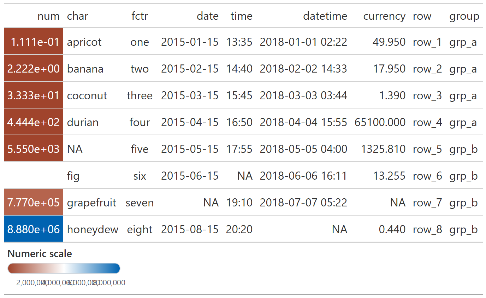
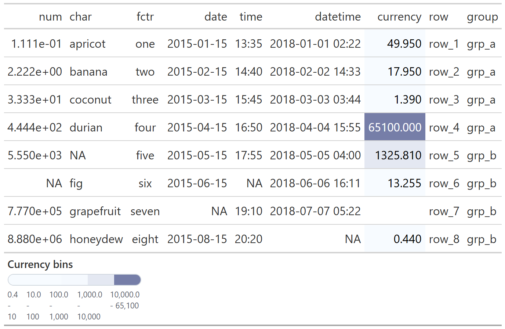
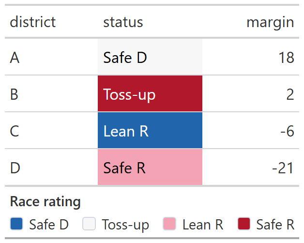
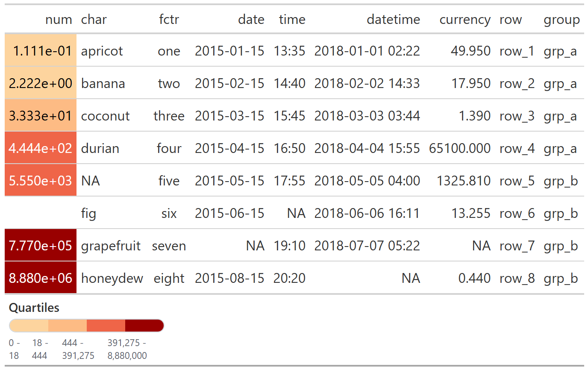

The goal of gtscales is to make color-encoded gt tables easier to read by adding matched legends directly to the rendered output.
Installation
You can install the development version of gtscales from GitHub with:
# install.packages("pak")
pak::pak("christopherkenny/gtscales")Examples
Continuous
gtscale_data_color_continuous() colors the column and adds a matching gradient legend.
exibble |>
gt() |>
gtscale_data_color_continuous(
column = num,
palette = c('#A0442C', 'white', '#0063B1'),
title = 'Numeric scale'
)
Bins
gtscale_data_color_bins() is useful when the color mapping is interval-based.
exibble |>
gt() |>
gtscale_data_color_bins(
column = currency,
palette = c('#f7fbff', '#08306b'),
bins = c(0, 10, 100, 1000, 10000, 70000),
title = 'Currency bins'
)
Discrete
gtscale_data_color_discrete() is more useful when colors encode a compact status or class variable that benefits from a legend.
data.frame(
district = c('A', 'B', 'C', 'D'),
status = c('Safe D', 'Toss-up', 'Lean R', 'Safe R'),
margin = c(18, 2, -6, -21)
) |>
gt() |>
gtscale_data_color_discrete(
column = status,
values = c('#2166ac', '#f7f7f7', '#ef8a62', '#b2182b'),
labels = c('Safe D', 'Toss-up', 'Lean R', 'Safe R'),
title = 'Race rating'
)
Quantiles
gtscale_data_color_quantiles() is useful when you want evenly sized rank groups instead of fixed numeric cutpoints.
exibble |>
gt() |>
gtscale_data_color_quantiles(
column = num,
palette = c('#fdd49e', '#fdbb84', '#ef6548', '#990000'),
quantiles = 4,
title = 'Quartiles'
)
Working with scales
gtscales is designed to accept the same kinds of helpers you would already use with scales.
You can pass label functions, break functions, transform specifications, and palette functions directly.
data.frame(
when = as.Date(c('2024-01-01', '2024-01-20', '2024-02-10', '2024-03-05')),
value = c(10, 18, 35, 52)
) |>
gt() |>
gtscale_data_color_bins(
column = when,
palette = scales::pal_viridis(),
bins = scales::breaks_width('1 month'),
title = 'Monthly bins'
)
data.frame(value = c(1, 10, 100, 1000)) |>
gt() |>
gtscale_data_color_continuous(
column = value,
palette = scales::pal_viridis(),
transform = 'log10',
breaks = scales::breaks_log(),
labels = scales::label_number()
)